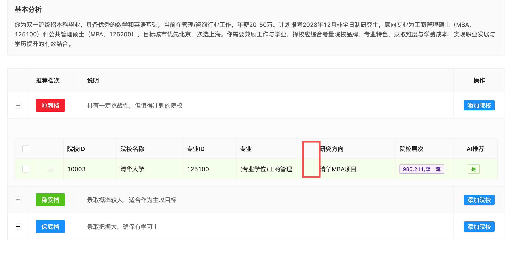
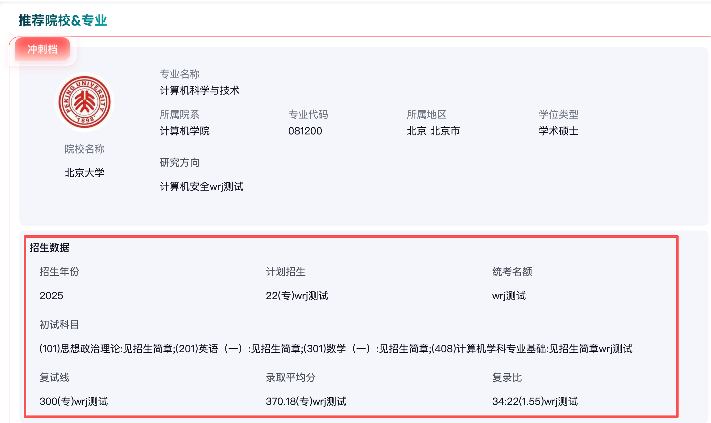
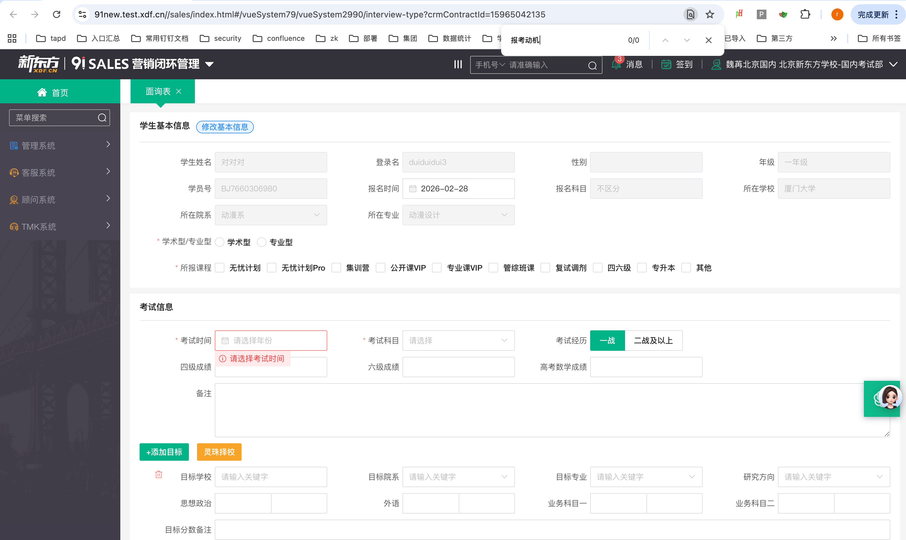

灵珠择校专业版v1.1
由钉钉文档结构化读取器生成，正文与评论已尽量按原始结构保留。
Document
迭代&排期=
设计稿：
修改记录
时间 | 动作 | 操作人 | 备注 |
|---|---|---|---|
2025.1.8 | 新建 | 李盼盼 |
核心沟通记录（选用）
Feature List & 流程、结构图
功能 | 优先级 | 备注 |
|---|---|---|
91 入口及数据对接 | P0 | 1. 91 入口 2. 基本信息自动带入 3. 能力水平自动带入 4. 定校签数据对接 5. 内部报考情况透传：在老师端新增字段显示新东方学员当前报考该院校的人数 |
增加出入参，支持按参考书推荐 | P0 | 1.专业课参考书匹配（算法调整） 2. 招生数据字段扩展 3. 考期数据混合使用（算法调整） 4. 推荐院校数翻倍（算法调整） 5. 排序规则调整（算法调整） |
详细方案
现有字段名 | 91系统名称 | 现有枚举值 | 91枚举值 | 处理 | |
|---|---|---|---|---|---|
基础信息 | 学员姓名 | 学生姓名 | - | - | 91带入后直接采用 |
学员编号/id | 学员号 | - | - | 91带入后直接采用（需校验有效性） | |
所属分校 | 集团学校 | - | - | 91带入后直接采用 | |
当前阶段 | 年级 | 大一在读；大二在读；大三在读；大四在读；大五在读；已毕业；在职 | 15 大一 16 大二 17 大三 18 大四 43 大五
19 在职 60 大学已毕业 | 91带入后直接采用 和择校的枚举值做映射 | |
毕业院校 | 学校/学院 | - | - | 91带入后直接采用（需校验有效性） | |
本科专业 | 专业 | - | - | 91带入后直接采用（需校验有效性） | |
工作行业 | 所在行业 | 金融|银行|保险|财会 管理|咨询 房地产|建筑 计算机|互联网|通信|电子 人力|翻译|法律 能源|矿产 贸易|消费 文化|传媒|体育 生产|加工|制造 制药|医疗 交通|环保 科研|教育|历史 政府|非盈利机构 军队|公安 农|林|牧|渔|其他 | 农、林、牧、渔业 10 采矿业 11 制造业 12 电力、热力、燃气及水生产和供应业 13 建筑业 14 批发和零售业 15 交通运输、仓储和邮政业 16 住宿和餐饮业 17 信息传输、软件和信息技术服务业 18 金融业 19 房地产业 20 租赁和商务服务业 21 科学研究和技术服务业 22 水利、环境和公共设施管理业 23 居民服务、修理和其他服务业 24 教育 25 卫生和社会工作 26 文化、体育和娱乐 27 公共管理、社会保障和社会组织 28 国际组织 15 其他 30 | 91带入后直接采用 择校的枚举值同步替换 | |
能力水平 | 英语水平 | 四级成绩/六级成绩 | 单选：未过四级；英语四级；英语六级；专业四级；专业八级 | 四级：（分数） 六级：（分数） | 择校的枚举值保留，增加成绩输入项 91带入后： 1.如有六级成绩且过线，定位“英语六级”并保存成绩 2.如只有四级成绩且过线，定位“英语四级”并保存成绩 3.如无成绩或未过线，定位“未过四级” |
目前年薪 | 此阶段最终年收入范围（税前） | 10w以内；10-20w；20-50w；50w以上 | 15万元以内，15-30万元之间、30-50万元之间、50-70万元之间、70-100万元之间、100万元及以上 | 91带入后直接采用 择校的枚举值同步替换 推荐模型不限制枚举值 免费版不动 | |
核心目标 | 报考动机 | 在职：多选（最多2个）：升职加薪；积分落户；学历提升；个人进修；人脉拓展； 在校：多选（最多2个）：继续学术深造；换个就业赛道；想上名校；想轻松拿证 学术研究（专业精进） 学历提升 职业转型（）、 名校情结 | 学历提升、职业晋升、专业精进、人际拓展、行业转换、积分落户、想上名校、想轻松拿证 | 91带入后直接采用 择校的枚举值同步替换 免费版不动 | |
学习偏好 | 计划考试时间 | 考试时间（年份） | 2026年12月；2027年12月；2028年12月；2029年12月；2030年12月 | （年份） | 91带入后： 1.根据年份定位现有枚举值 |
首选地区 | 意向地区 | - | - |

新增 | 枚举值 | 说明 | |
|---|---|---|---|
考研目标 | 意向院校/代码 | 取院校库里的院校 | 必填项（线上机构非必填），单项 不和专业联动 |
|
|
|
1、参考书匹配度：高->低
2、近三年录取人数趋势：增加->不变->减少
3、复录比：低->高
4、初复试占比比例：复试占比低->复试占比高
5、录取最低分：分数低->分数高

招生年份 | 计划招生 | 统考名额 | 录取平均分 | 复试线 | 复录比 |
|---|---|---|---|---|---|
2027 | 22 | 99 | 370.18（专） | 9 | 34:22 |
初试科目： 初试参考书： 复试大纲/参考书： 备注： | |||||
2026 | 22 | 99 | 370.18（专） | 9 | 34:22 |
初试科目： 初试参考书： 复试大纲/参考书： 备注： | |||||
2025 | 22 | 99 | 370.18（专） | 9 | 34:22 |
初试科目： 初试参考书： 复试大纲/参考书： 备注： |
招生年份 | 计划招生 | 统考名额 | 学费 | 学制 | 上课方式 | 录取平均分 | 复试线 | 复录比 |
|---|---|---|---|---|---|---|---|---|
2027 | 22 | 99 | 9 | 370.18（专） | 34:22 | |||
备注： | ||||||||
2026 | 22 | 99 | 9 | 370.18（专） | 34:22 | |||
备注： | ||||||||
2025 | 22 | 99 | 9 | 370.18（专） | 34:22 | |||
备注： |
收益评估：
统计需求：
上线配置及物料提供：
配置项/物料 | 交付内容 | 负责人 | 状态 | DDL |
|---|
@李盼盼7(李盼盼)这里应该是“学校code+专业code+考季”维度去91拉取数据吧
回复@谷继显: 对
@李盼盼7(李盼盼)我们数据库里的参考书是一段文本。这里是不是可以支持手动输入多个
示例：
(610)马克思主义哲学原理:①《马克思主义哲学》（马工程教材），人民出版社、高等教 育出版社，2009 年出版； ②《马克思主义哲学史》（马工程教材），人民出版社、高等教育出版社，2012 年出版； (801)中西哲学史:①《中国哲学史》（马工程教材），人民出版社、高等教育出版社，2012 年出版； ②《西方哲学史》（马工程教材），人民出版社、高等教育出版社，2011 年出版。
页面不展示，当问卷包含目标院校时，后端筛选出参考书，传给推荐
待确认：目前在91系统看了下，没有找到报考动机字段值

待确认，在91系统也未看到该字段值